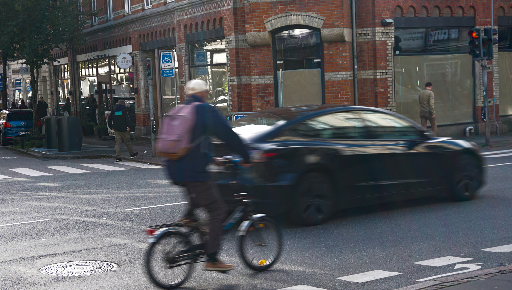

Transport muligheder på SU
- fra billigt til dyrt
Cyklen:
Mange har i forvejen en cykle, udnyt den. Eller køb en brugt cykel på Facebook Marketplace, DBA eller lignende.
El-cyklen:
Kan være dyrt i øjeblikket, men du vil spare mange penge i det lange løb. Man kan derudover finde gode, men billige el-cykler brugte på f.eks DBA og Facebook Marketplace.
Offentlig Transport:
Der er mange muligheder for offentlig transport til billige penge, bl.a letbanen.
Bilen:
Bilen er klart den dyreste og mindst miljøvenlige mulighed, men kan gøres billigere og mere miljøbevidst ved samkørsel.
Cyklen
Til tider kan offentlig transport virke upraktisk, da de kan være forsinket og ikke altid passe ind i ens planer. Til dem hvor offentlig transport ikke passer ind i planerne er cyklen et godt alternativ. Når du hopper på cyklen får du både motion og er med til at mindske dit miljøfodspor. Hvis man studerer i og omkring de større byer er der også meget fokus på at have et bredt system af cykelstier, så det er nemt at komme til og fra studie og arbejde. Og hvis man ikke er den store motionist og hader at kommende svedende til studiet, så er el-cyklen en god investering og et godt alternativ.
Offtentlig Transport
En oplagt bæredygtig mulighed er at vælge offentlig transport. Busser, tog og
letbanen er generelt mere miljø- og SU-venlige end at køre alene i en bil, da de kan transportere mange
passagerer på én gang og dermed mindske trængslen på vejene. Som studerende kan du ofte få rabat når du
bruger offentlig transport.
Der findes bl.a rejsekort til studerende men derudover også pendlerkort til
studerende som evt. bor langt fra deres uddannelsessted.
Bilen
For dem som stadig foretrækker bilen, er der stadig mulighed for at gøre transporten mere bæredygtig. I de større byer som Århus, er der ofte ikke langt til hvor dine klassekammerater bor. Derfor ville samkørsel være en billigere og mere miljøvenlig måde at bruge bilen på, da alle kan gå sammen om benzin udgiften.
_________________________________________________________________
DU KAN GØRE EN FORSKEL
Som studerende er transport ofte ikke den første post vi vælger at sætte fokus på i forhold til bæredygtighed. Dette er både fordi det er dyrt og kan virke uoverskueligt når man har få midler til at gøre en større forskel. Men os som studerende KAN gøre en forskel når det gælder transport og det behøver ikke at være dyrt. Fokusset bør ligge på hvad vi kan gøre og ikke på at gøre det bedre end andre!